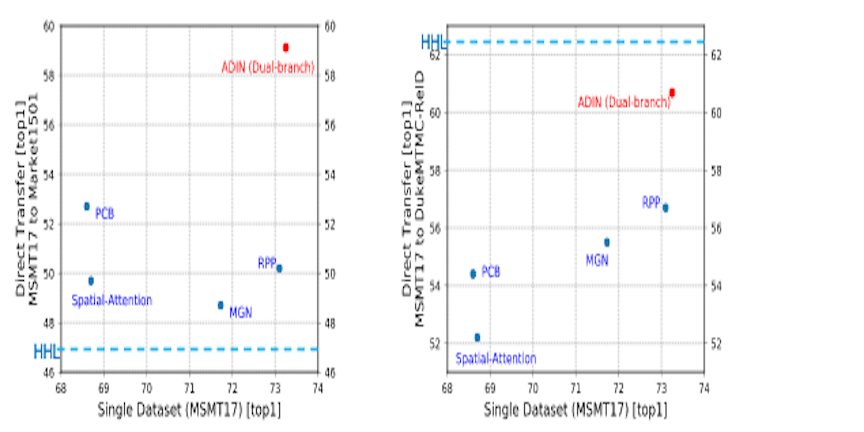
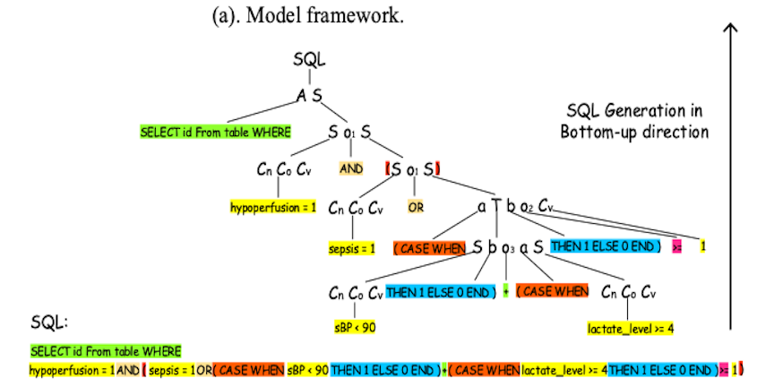
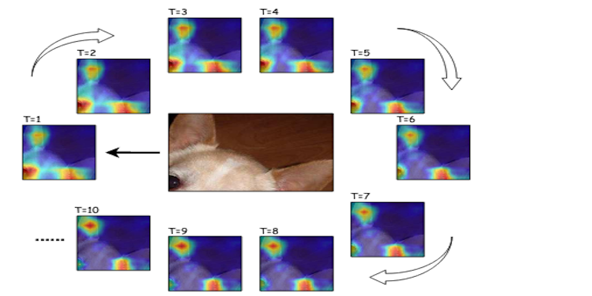
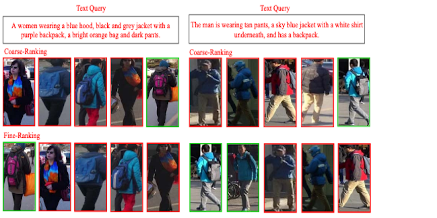
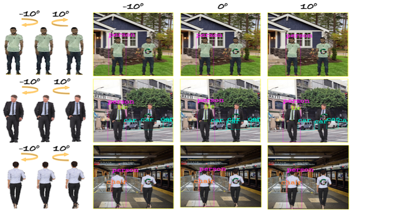

I am currently a second-year Ph.D. student of Electrical and Computer Engineering (DICE) at VITA, The University of Texas at Austin, advised by Dr. Zhangyang (Atlas) Wang. My research interests include AutoML, Adversarial Robustness, Self-Supervision and Graph Neural Networks. [Resume] [Google Scholar] [Publication]
I am currently a second-year Ph.D. student of Electrical and Computer Engineering (DICE) at VITA, The University of Texas at Austin, advised by Dr. Zhangyang (Atlas) Wang. My research interests include AutoML, Adversarial Robustness, Self-Supervision and Graph Neural Networks. [Resume] [Google Scholar] [Publication]
Education
- [Aug. 2020 - Present] Ph.D. student in Electrical and Computer Engineering, DICE, The University of Texas at Austin
- [Aug. 2018 - Aug. 2020] Ph.D. student in Computer Science, Texas A&M University
- [Aug. 2013 - Jun. 2017] B.S.c. in Applied Mathematics, School of the Gifted Young, University of Science and Technology of China
- [Aug. 2013 - Jun. 2017] B.Eng. (Dual) in Computer Science, School of the Gifted Young, University of Science and Technology of China
Publication
[*equal contribution]
2020
 [InterSpeech’20] AutoSpeech: Neural Architecture Search for Speaker Recognition
[InterSpeech’20] AutoSpeech: Neural Architecture Search for Speaker Recognition
T. Chen*, S. Ding*, X. Gong, W. Zha, and Z. Wang. [Paper] [Code] [Abstract]
 [ECCV’20] HALO: Hardware-Aware Learning to Optimize
[ECCV’20] HALO: Hardware-Aware Learning to Optimize
T. Chen*, C. Li*, H. You, Z. Wang, and Y. Lin. [Paper] [Code] [Abstract]
 [ICML’20] When Does Self-Supervision Help Graph Convolutional Networks?
[ICML’20] When Does Self-Supervision Help Graph Convolutional Networks?
T. Chen*, Y. You*, Z. Wang, and Y. Shen. [Paper] [Code] [Abstract]
 [ICML’20] Self-PU: Self Boosted and Calibrated Positive-Unlabeled Training
[ICML’20] Self-PU: Self Boosted and Calibrated Positive-Unlabeled Training
X. Chen, W. Chen, T. Chen, Y. Yuan, C. Gong, K. Chen, and Z. Wang. [Paper] [Code] [Abstract]
 [CVPR’20] Adversarial Robustness: From Self-Supervised Pre-Training to Fine-Tuning
[CVPR’20] Adversarial Robustness: From Self-Supervised Pre-Training to Fine-Tuning
T. Chen, S. Liu, S. Chang, Y. Cheng, L. Amini, and Z. Wang. [Paper] [Code] [Abstract]
 [CVPR’20] L^2-GCN: Layer-Wise and Learned Efficient Training of Graph Convolutional Networks
[CVPR’20] L^2-GCN: Layer-Wise and Learned Efficient Training of Graph Convolutional Networks
T. Chen*, Y. You*, Z. Wang, and Y. Shen. [Paper] [Code] [Abstract]
 [ICLR’20] Triple Wins: Boosting Accuracy, Robustness and Efficiency by Enabling Input-Adaptive Inference
[ICLR’20] Triple Wins: Boosting Accuracy, Robustness and Efficiency by Enabling Input-Adaptive Inference
T. Chen*, T. Hu*, H. Wang, and Z. Wang. [Paper] [Code] [Abstract]
 [ICLR’20] I am Going MAD: Maximum Discrepancy Competition for Comparing Classifiers Adaptively
[ICLR’20] I am Going MAD: Maximum Discrepancy Competition for Comparing Classifiers Adaptively
H. Wang, T. Chen, Z. Wang, and K. Ma. [Paper] [Code] [Abstract]
 [WACV’20] Calibrated Domain-Invariant Learning for Highly Generalizable Large Scale Re-Identification
Y. Yuan, W. Chen, T. Chen, Y. Yang, Z. Ren, Z. Wang and G. Hua. [Paper] [Code] [Abstract]
 [LREC’20] Dataset and Enhanced Model for Eligibility Criteria-to-SQL Semantic Parsing
X. Yu, T. Chen, Z. Yu, H. Li, Y. Yang, X. Jiang and A. Jiang. [Paper] [Abstract]
 [CVPRW’20] Focus Longer to See Better: Recursively Refined Attention for Fine-Grained Image Classification
P. Shroff, T. Chen, Y. Wei, and Z. Wang. [Paper] [Code] [Abstract]
2019
 [NeurIPS’19] Learning to Optimize in Swarms
[NeurIPS’19] Learning to Optimize in Swarms
Y. Cao, T. Chen, Z. Wang, and S. Yang. [Paper] [Code] [Abstract]
 [ICCV’19] ABD-Net: Attentive but Diverse Person Re-Identification
[ICCV’19] ABD-Net: Attentive but Diverse Person Re-Identification
T. Chen, S. Ding, J. Xie, Y. Yuan, W. Chen, Y. Yang, Z. Ren, and Z. Wang. [Paper] [Code] [Abstract]
 [ICCVW’19] Cross-Model Person Search: A Coarse-to-FineFramework using Bi-directional Text-Image Matching
T. Chen*, X. Yu*, Y. Yang, M. Mugo, and Z. Wang. [Paper] [Abstract]
Technical Reports
 [ArXiv Preprint’20] Can 3D Adversarial Logos Cloak Humans?
T. Chen, Y. Wang, J. Zhou, S. Liu, S. Chang, C. Bajaj, and Z. Wang. [Paper] [Code] [Abstract]
Experience
- Facebook Research, Research Intern [Sep. 2020 - Dec. 2020]
- Mentor: Dr. Hanning (Eric) Zhou, Dr. Xing Wang
- Microsoft Research Redmond, Research Intern [May. 2020 - Aug. 2020]
- Mentor: Dr. Yu Cheng, Dr. Zhe Gan, Dr. Yu Hu
- Walmart Technology, Research Intern [May. 2019 - Aug. 2019]
- Mentor: Dr. Yang Yang
- University of Science and Technology of China, Research Assistant [Jun. 2017 - Jun. 2018]
- Mentor: Dr. Zhouwang Yang
- Harvard University, Research Intern [Jul. 2016 - Jan. 2017]
- Mentor: Dr. Gil Alterovitz
Research Award
- 3rd Place, ICCV 2019 WIDER Challenge Track 4, Oct. 2019
- First Place, Walmart Person Re-Identification (Re-ID) Competition, May. 2018
- NeurIPS 2019 Student Travel Award, Dec. 2019
More About Me
- I am a big fan of Pokemon. Playing Pokemon Go is one of my daily activities.
- I also enjoy Hip-Hop and Country music. Air (艾热) is one of my favorite Chinese Hip-Hop stars.